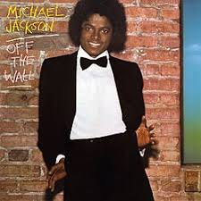
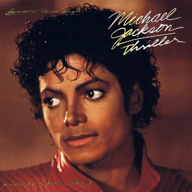
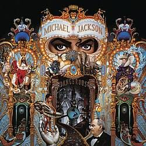
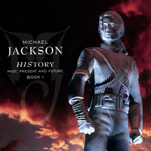

1979
Off the Wall
Album solo dewasa pertama yang memadukan disco, funk, dan pop.
Musisi · Penari · Ikon Budaya Pop
Dijuluki King of Pop — suara khas, koreografi revolusioner, dan visi artistik yang mengubah wajah musik dunia.
Lihat CV & PortofolioLima babak yang membentuk warisan Sang Raja Pop.

Album solo dewasa pertama yang memadukan disco, funk, dan pop.

Album terlaris sepanjang masa, melahirkan video musik ikonik.

Menegaskan status superstar global lewat tur dunia.

Eksplorasi new jack swing dan panggung teatrikal megah.

Perayaan karier dalam skala orkestra dan produksi visual besar.
“Jika Anda datang ke dunia ini mengetahui Anda dicintai dan meninggalkannya dengan pengetahuan yang sama, semua yang terjadi di antaranya bisa dihadapi.”— Michael Jackson